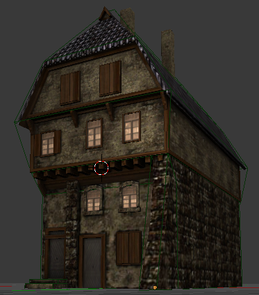
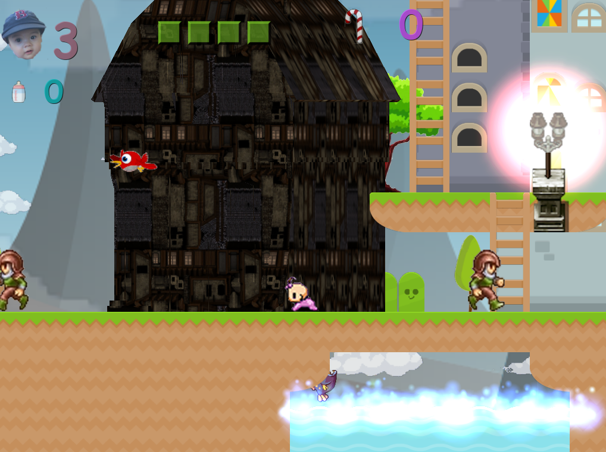

crisx
Hi
I’ve got something weird with one model, in Blender it looks like this:

I used the Urho3D-Blender plugin to export the model, I successfully got the model, material and texture files, but when used in, it look like this:

It doesn’t match the size of the model, I think the wrong technique is used in the material (Techniques/DiffNormal.xml). I didn’t did anything special in the code:
StaticModel* Object = tileNode->CreateComponent<StaticModel>();
Object->SetModel(cache->GetResource<Model>("Models/medium_h_1.mdl"));
Object->SetCastShadows(true);
Object->SetMaterial(cache->GetResource<Material>("Materials/Mittel_Haus.xml"));
I put the blend file here: https://ufile.io/8po1d
thxs